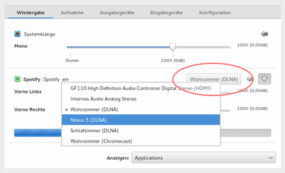

pulseaudio-dlna
Dieser Artikel wurde für die folgenden Ubuntu-Versionen getestet:
Ubuntu 16.04 Xenial Xerus
Zum Verständnis dieses Artikels sind folgende Seiten hilfreich:
pulseaudio-dlna  leitet die Audioausgabe von PulseAudio ins lokale Netzwerk (LAN) um. Allerdings ist auf Empfänger- bzw. Client-Seite nur eine eingeschränkte Auswahl von entsprechender Hard- oder Software möglich (siehe Dokumentation ). Wichtig zum Verständnis ist außerdem, dass es sich nicht um einen vollwertigen DLNA-Server handelt. Eine gleichzeitige Audiowiedergabe auf dem eigenen Rechner und dem Client (UPnP Media Renderer; z.B. Chromecast) ist nicht möglich.
leitet die Audioausgabe von PulseAudio ins lokale Netzwerk (LAN) um. Allerdings ist auf Empfänger- bzw. Client-Seite nur eine eingeschränkte Auswahl von entsprechender Hard- oder Software möglich (siehe Dokumentation ). Wichtig zum Verständnis ist außerdem, dass es sich nicht um einen vollwertigen DLNA-Server handelt. Eine gleichzeitige Audiowiedergabe auf dem eigenen Rechner und dem Client (UPnP Media Renderer; z.B. Chromecast) ist nicht möglich.
Auch PulseAudio selbst ist netzwerkfähig. Allerdings wird als Ziel ein PulseAudio-Gerät vorausgesetzt und nicht wie im Fall von pulseaudio-dlna ein DLNA-Client.
Installation¶
 Das Programm ist ab Ubuntu 16.10 in den offiziellen Paketquellen enthalten. Folgendes Paket muss installiert werden [1]:
Das Programm ist ab Ubuntu 16.10 in den offiziellen Paketquellen enthalten. Folgendes Paket muss installiert werden [1]:
pulseaudio-dlna (universe)
 mit apturl
mit apturl
Paketliste zum Kopieren:
sudo apt-get install pulseaudio-dlna
sudo aptitude install pulseaudio-dlna
Nach der Installation muss der Rechner neu gestartet werden.
PPA¶
Für ältere Ubuntu-Versionen muss man auf das "Personal Packages Archiv" (PPA) [2] des Entwicklers ausweichen.
Adresszeile zum Hinzufügen des PPAs:
ppa:qos/pulseaudio-dlna
Hinweis!
Zusätzliche Fremdquellen können das System gefährden.
Ein PPA unterstützt nicht zwangsläufig alle Ubuntu-Versionen. Weitere Informationen sind der  PPA-Beschreibung des Eigentümers/Teams qos zu entnehmen.
PPA-Beschreibung des Eigentümers/Teams qos zu entnehmen.
Damit Pakete aus dem PPA genutzt werden können, müssen die Paketquellen neu eingelesen werden.
Nach dem Aktualisieren der Paketquellen erfolgt die Installation wie oben angegeben.
Verwendung¶
Die praktische Nutzung erfolgt mit den folgenden Schritten:
pulseaudio-dlna wird innerhalb der eigenen Desktop-Umgebung in einem Terminal gestartet [3]:
pulseaudio-dlna
Dann startet man die Audiowiedergabe über einen beliebigen Audioplayer (der die Ausgabe via PulseAudio unterstützt muss)
Auf Empfängerseite kann nun entweder eine Hardware-Komponente oder Software zur Wiedergabe genutzt werden. Die vollständige URL ergibt sich aus dem Rechnernamen (oder der IP-Adresse), auf dem pulseaudio-dlna läuft, kombiniert mit dem Port (Beispiel:
http://192.168.1.148:8080/). Dies ist aber nur relevant, wenn der Quellrechner nicht automatisch gefunden wird.Nun kann auf dem Rechner mit pavucontrol die Ausgabe auf den Client aktiviert werden. Statt des standardmäßig voreingestellten internen Audio-Geräts wählt man den jeweiligen DLNA-Client aus (siehe Abbildung).
 DLNA-Client auswählen Beendet wird die Umleitung der Audioausgabe im Terminal mit der Tastenkombination Strg + C . PulseAudio schaltet automatisch auf das Standardgerät zur Audiowiedergabe zurück.
Konfiguration¶
Bestimmte Einstellungen können als Option beim Programmstart angegeben werden.
| Optionen (Auswahl) | |
| Parameter | Beschreibung |
-h, --help | Hilfe anzeigen |
-v, --version | Version anzeigen |
-p NUMMER, --port=NUMMER | Portnummer (Standard: 8080) |
-c CODEC, --codec=CODEC | Codec: mp3 (Standard), ogg, flac, wav, opus, aac, l16 |
--encoder-backend=BACKEND | Backend: generic (Standard), avconv, ffmpeg |
-b BITRATE, --bit-rate=BITRATE | Bitrate in kbit/s, z.B. 192 |
--cover-mode=MODUS | Coveranzeige: default (Standard), disabled (aus), distribution (Distributions-Logo), application (Audioplayer-Logo) |
Weitere Optionen sind der Manpage zu entnehmen.
Auf Wunsch kann eine externe Konfigurationsdatei verwendet werden, die auch gerätespezifische Einstellungen erlaubt. Mit dem Befehl:
pulseaudio-dlna --create-device-config
wird eine Grundkonfiguration ~/.local/share/pulseaudio-dlna/devices.json erstellt, die anschließend mit einem Editor [4] angepasst werden kann. Eine bereits vorhandene Konfiguration kann mit dem Befehl:
pulseaudio-dlna --update-device-config
erneuert werden (eigene Änderungen bleiben erhalten).
Problembehebung¶
Das Programm zeigt im Terminal zahlreiche Hinweise, die die Fehlersuche erleichtern.
Kein DLNA-Client¶
Sollte kein verfügbarer DLNA-Client angezeigt werden, obwohl ein solcher zur Verfügung steht, beendet man zuerst pulseaudio-dlna und startet anschließend PulseAudio neu:
pulseaudio -k
Nun versucht man es erneut.
Latenzzeit¶
Bei der Umleitung der Audioausgabe von Videos kommt es prinzipbedingt zu Verzögerungen, die durch Latenzen im Netzwerk begründet sind: Bild und Ton sind nicht mehr synchron. Bei der Nutzung eines reinen Audioplayers ist dieses Problem nicht relevant.
Links¶
BubbleUPnP für DLNA/Chromecast
- DLNA-Client für Android
Tonmitschnitt mit Pulseaudio und DLNA
 - c't, Ausgabe 23/2016, S. 160
- c't, Ausgabe 23/2016, S. 160How To Stream Audio To A Chromecast Or DLNA/UPnP Device From Linux
- Blogbeitrag, 03/2016Umleitung – Linux-Sound per PulseAudio an DLNA-Receiver leiten
- LinuxUser, 10/2015Linux-Sound per PulseAudio an Chromecast (oder DLNA-Receiver) streamen
- Blogbeitrag, 08/2015stream2ip - Anwendung, die auf pulseaudio-dlna zurückgreift
PulseAudio
 Übersichtsseite
Übersichtsseite
- Erstellt mit Inyoka
-
 2004 – 2017 ubuntuusers.de • Einige Rechte vorbehalten
2004 – 2017 ubuntuusers.de • Einige Rechte vorbehalten
Lizenz • Kontakt • Datenschutz • Impressum • Serverstatus -
Serverhousing gespendet von